The main impact of a 200 basis-point (2.00 percentage-point) rise in United States interest rates on Sweden is a 0.02% drop in GDP by the 11th quarter — a minimal spillover. Sweden ranks 29th of the countries covered by absolute GDP effect, placing it in the "minimal" band. The shock is a US monetary tightening, and Sweden's open, trade-exposed economy absorbs it mainly through financial conditions and competitiveness rather than through a large domestic demand contraction. The peak output loss of −0.0231% of GDP is small in absolute terms, and the path is slow-moving: GDP is essentially flat in Q1 (−0.0007%), builds gradually through the first year, and reaches its trough only in Q11.
Demand and trade. Household consumption falls modestly, peaking at −0.0101% of GDP in Q11 and still −0.0033% by Q20 — a slow, persistent drag as higher global rates feed through to Swedish households. Private investment is the hardest-hit domestic demand component, peaking at −0.0776% in Q9 before fading to −0.0007% by Q20, consistent with a higher cost of capital. Net exports — the trade balance, since this model does not split imports from exports — actually improve, peaking at +0.0348% of GDP in Q10 and remaining +0.0131% by Q20, as the weaker real exchange rate makes Swedish exports more competitive. Government spending rises slightly, peaking at +0.0045% in Q11, a mild automatic-stabiliser response. Government debt drifts up to +0.0057% by Q17 and stays near +0.0053% at Q20, reflecting the small primary deficits and slower nominal growth.
External / FX. The real exchange rate — currency strength — depreciates, with the peak at +0.1707% in Q9 and +0.0579% by Q20. Note the sign convention: a positive value here means the real exchange rate is weaker (more competitive), which lines up exactly with the improving net export position. The currency weakness is the main channel through which Sweden partially offsets the US rate shock.
Labour. Employment falls gradually, peaking at −0.0121% in Q15 and still −0.0093% by Q20 — a slow labour-market deterioration that lags the output trough. Unemployment rises correspondingly, peaking at +0.0137 percentage points in Q14 and remaining +0.0095pp by Q20. Real wages rise, peaking at +0.0217% in Q12 before fading to +0.0007% by Q20; the initial real wage gain reflects the fact that nominal wage rigidity plus falling CPI inflation temporarily boosts real incomes even as employment weakens.
Prices. CPI inflation rises initially, peaking at +0.0098 percentage points in Q2, then turns negative from Q10 onward and reaches −0.0025pp by Q20. Domestic inflation follows a similar but smaller path, peaking at +0.0069pp in Q2 and turning negative from Q10, ending at −0.0017pp. Firms' marginal cost falls steadily, peaking at −0.0137% in Q11 and remaining −0.0039% by Q20, consistent with weaker demand and lower input costs.
Financial conditions. The local policy rate rises modestly, peaking at +0.0151pp in Q6, then turns negative from Q13 and ends at −0.0104pp by Q20 — the Riksbank initially tightens in sympathy with the US, then eases as domestic inflation falls. Government 2-year yields rise to +0.0132pp in Q3 before turning negative from Q9 and ending at −0.0071pp. The 5-year yield rises only briefly (+0.0024pp in Q1), turns negative from Q5, and ends at −0.0038pp. The 10-year yield falls throughout, reaching −0.0036pp in Q13 and −0.0021pp by Q20. Bond prices fall sharply, peaking at −0.4871% in Q8, then recover and turn positive from Q16, ending at +0.0651% by Q20. Equity prices fall, peaking at −0.2842% in Q8 and still −0.0278% by Q20. Tobin's Q — the value of installed capital — falls to −0.0544% in Q9 and recovers to −0.0005% by Q20. House prices decline steadily, peaking at −0.0202% in Q18 and −0.0196% by Q20. Bank credit contracts gradually, peaking at −0.0053% in Q17 and −0.0049% by Q20. Lending spreads widen only marginally, peaking at +0.0001pp in Q16 — a negligible credit-risk response.
Sectoral and capital. Manufacturing GDP is the most exposed sector, falling −0.0497% at its Q9 trough and still −0.0149% by Q20, reflecting the trade and cost-of-capital channels. Services GDP falls less, peaking at −0.0165% in Q11 and −0.0047% by Q20. The capital stock declines very slowly, reaching −0.0039% by Q20, as weaker investment cumulates into a smaller productive capacity.
Timing. The GDP hit is largest in Q11 at −0.0231%, and it has not faded by Q20 — the path is still −0.0066% at the end of the horizon, roughly a quarter of the peak. The shock is slow-building and persistent rather than sharp and short-lived.
Close. These are model impulse responses to a 200bp US rate rise, relative to a baseline without that shock — not forecasts. They describe the conditional, model-implied path for Sweden, and the minimal magnitude reflects Sweden's limited direct exposure to US rates relative to the larger effects seen in more financially integrated or more dollar-sensitive economies.
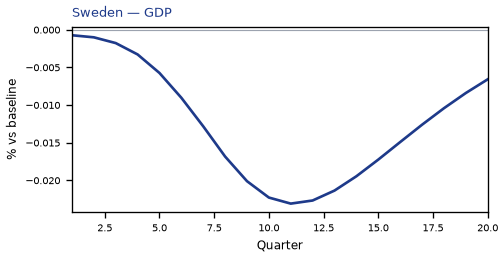
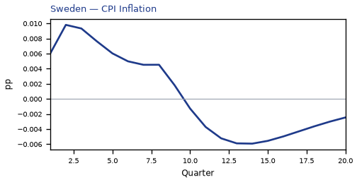
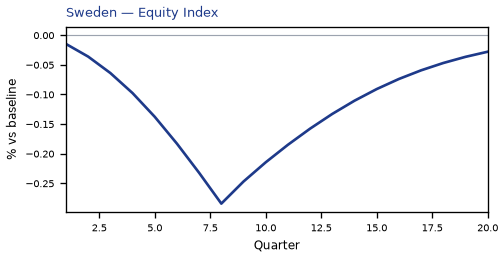
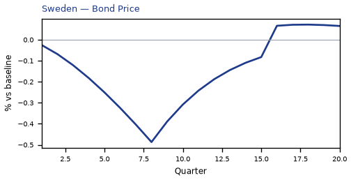
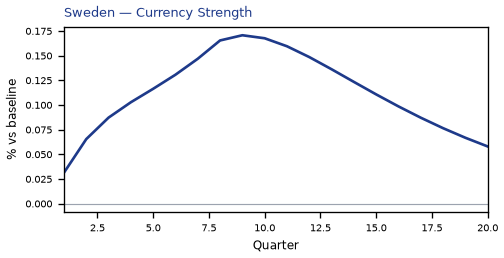
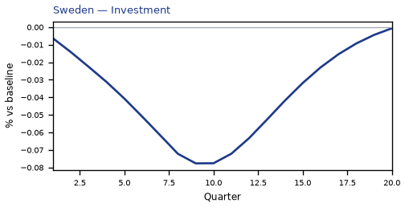
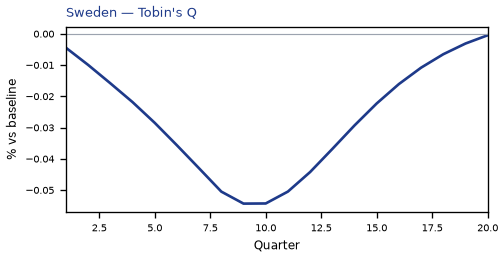
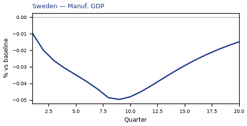
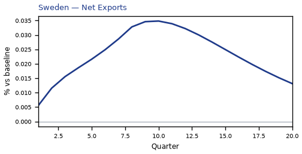
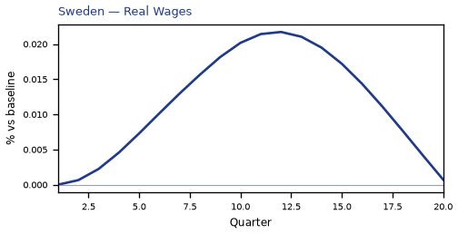
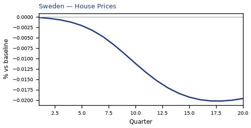
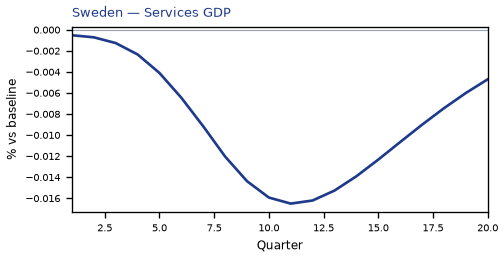
source=live · global_macro_v5 · contract v6 · Q1–Q20 JSON · not financial advice